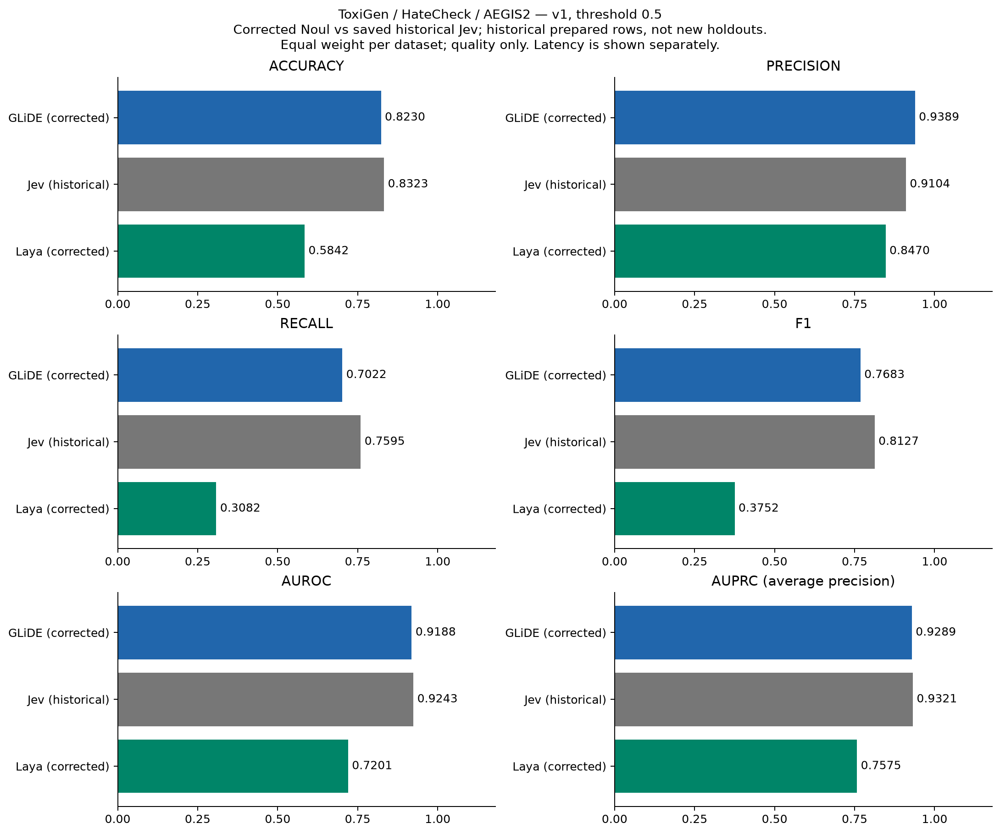

Historical prepared rows; not the new held-out split policy. v1 / threshold 0.5 unless stated. Jev is a saved historical reference, not a rerun.
Both provider suites have finished all configurations. Recorded request failures: 16; quality uses shared successful rows. See coverage for failure details.
| provider | accuracy | precision | recall | f1 | auroc | auprc |
|---|---|---|---|---|---|---|
| fastino.ai | 0.8230 | 0.9389 | 0.7022 | 0.7683 | 0.9188 | 0.9289 |
| historical_jev | 0.8323 | 0.9104 | 0.7595 | 0.8127 | 0.9243 | 0.9321 |
| laya-ai.com | 0.5842 | 0.8470 | 0.3082 | 0.3752 | 0.7201 | 0.7575 |
